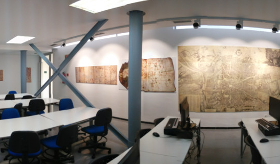
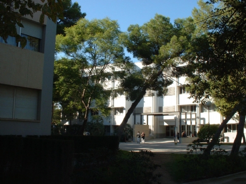
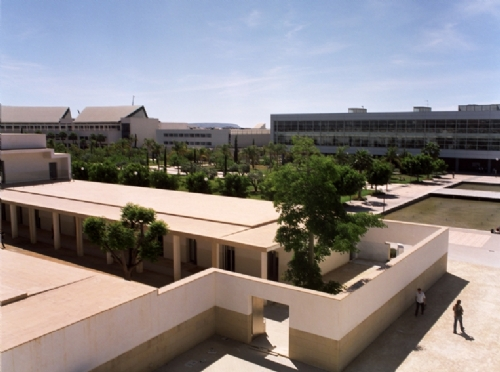
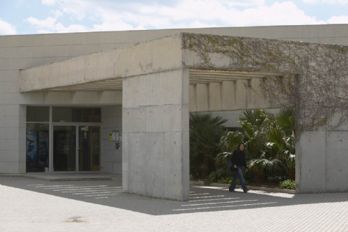

<html>
<head>
  <title>Mapa 9: GeoJSON y atributos</title>
  <meta charset="utf-8" />
  <meta name="viewport" content="width=device-width, initial-scale=1.0">
  <link rel="shortcut icon" type="image/x-icon" href="docs/images/favicon.ico" />
  <link rel="stylesheet" href="https://unpkg.com/leaflet@1.0.2/dist/leaflet.css" />
  <script src="https://unpkg.com/leaflet@1.0.2/dist/leaflet.js"></script>
  <style>
    #map{ height: 100% }
  </style>
</head>
<body>
 
  <div id="map"></div>
 
  <script>
	misElementos =     {
  "type": "FeatureCollection",
  "features": [
    {
      "type": "Feature",
      "properties": {
        "nombre": "Aula de cartografía",
        "texto": "",
        "icon": "mundo.svg",
        "alto": 50,
        "ancho": 150
      },
      "geometry": {
        "type": "Point",
        "coordinates": [
          -0.5113846063613892,
          38.382776546968834
        ]
      }
    },
    {
      "type": "Feature",
      "properties": {
        "nombre": "Mi facultad",
        "texto": "",
        "icon": "papelera.svg",
        "alto": 50,
        "ancho": 150
      },
      "geometry": {
        "type": "Point",
        "coordinates": [
          -0.5146542191505432,
          38.385331076277325
        ]
      }
    },
 
    {
      "type": "Feature",
      "properties": {
        "nombre": "Rectorado",
        "texto": "",
        "icon": "mundo.svg",
        "alto": 50,
        "ancho": 150
      },
      "geometry": {
        "type": "Point",
        "coordinates": [
          -0.5116099119186401,
          38.384794947977
        ]
      }
    },
    {
      "type": "Feature",
      "properties": {
        "nombre": "Club Social II",
        "texto": "",
        "icon": "mundo.svg",
        "alto": 50,
        "ancho": 150
      },
      "geometry": {
        "type": "Point",
        "coordinates": [
          -0.5132997035980225,
          38.38293633910159
        ]
      }
    }
  ]
}; 
  // initialize the map
  var map = L.map('map').setView([38.384748, -0.514140], 16);
 
  // load a tile layer
  L.tileLayer('http://{s}.tile.openstreetmap.org/{z}/{x}/{y}.png', {
		maxZoom: 19,
		attribution: '&copy; <a href="http://www.openstreetmap.org/copyright">OpenStreetMap</a>'
	}).addTo(map);


    L.geoJson(misElementos,{
      pointToLayer: function(feature,latlng){
		var miIcon = L.icon({
		  iconUrl: feature.properties.icon,
		  iconSize: [60,50]
		});		  
        var marker = L.marker(latlng,{icon: miIcon});
        
 		if (feature.properties && feature.properties.nombre && feature.properties.texto) {
			contenido = "<strong>"+feature.properties.nombre+"</strong><br>"+feature.properties.texto;
			marker.bindPopup(contenido);
		}       
        
        
       // marker.bindPopup(feature.properties.nombre + '<br/>' + feature.properties.texto);
        return marker;
      }
    }).addTo(map);

 
  </script>
</body>
</html>
